Introdução
Este documento visa implementar uma árvore AVL utilizando a linguagem C++, em sua especificação de 2014. A árvore é implementada utilizando o recurso de template para sua generalização.
Este código foi feito no editor Emacs através do formato Org, podendo ser transformado em um único arquivo de código.
O documento em questão pode ser atualizado à medida que surgir a necessidade, ou à medida que bugs forem sendo encontrados. Se você encontrou um problema no código ou deseja fazer uma sugestão, envie um e-mail para o autor (como visto no cabeçalho desta página), ou crie um pull request no repositório deste website.
Caso queira ver apenas o código, poderá encontrá-lo aqui.
Cabeçalhos e bibliotecas
Começamos identificando cabeçalhos de bibliotecas úteis a serem utilizadas. Temos bibliotecas para Entrada e Saída e para Matemática em geral.
Também utilizaremos as estruturas std::queue e std::vector como
utilitários para escrita da árvore em níveis e para manipulação de
elementos a serem adicionados na árvore, respectivamente.
#include <iostream> #include <cmath> #include <queue> #include <vector>
Estilo de impressão
A enumeração a seguir descreve cinco estilos de impressão para uma árvore AVL. Estes estilos são:
- In order: Descreve os elementos em ordem crescente. Determina a impressão recursiva da sub-árvore da esquerda, do elemento atual, e a impressão recursiva da árvore da direita.
- Preorder: Imprime o elemento atual e em seguida imprime recursivamente as sub-árvores da esquerda e da direita.
- Post-order: Imprime primeiramente as sub-árvores da esquerda e da direita, e então imprime o elemento atual.
- Level: Imprime sequencialmente a árvore, nível a nível.
- Triangle: Funciona como level, porém imprime cada nível em uma linha. Ponteiros nulos também serão impressos por conveniência.
enum TreePrintStyle { TREEPRINT_INORDER, TREEPRINT_PREORDER, TREEPRINT_POSTORDER, TREEPRINT_LEVEL, TREEPRINT_TRIANGLE };
Início da classe AVLTree
A classe AVLTree é uma classe construída utilizando templates. Desta
forma, esta classe pode ser generalizada para qualquer tipo
comparável1.
Iniciamos por declarar a classe propriamente dita. Os métodos serão implementados de forma subsequente.
Adicionalmente, aqui declaramos os seguintes elementos:
- Estrutura interna de um nó. A estrutura a seguir descreve um nó qualquer da árvore. Esta estrutura é acessível apenas no escopo interno da mesma. Portanto, é bom observar que não será possível "exportar" ponteiros de nós pertencentes à árvore.
- Ponteiro para o nó-raiz da árvore. Este atributo da classe armazena um ponteiro para o nó-raiz da árvore.
template<typename T> class AVLTree { public: AVLTree(); AVLTree(std::vector<T>); ~AVLTree(); bool insert(T); void print(TreePrintStyle s = TREEPRINT_INORDER) const; void clear(void); bool search(const T) const; bool remove(const T); private: struct node_t { T info; node_t *left; node_t *right; }; node_t *_root; int _height(const node_t*) const; int _balance_index(const node_t*) const; void _lrot(node_t*&); void _rrot(node_t*&); void _rrot_dbl(node_t*&); void _lrot_dbl(node_t*&); void _balance(node_t*&); bool _insert(T, node_t*&); void _print_inorder(const node_t*) const; void _print_preorder(const node_t*) const; void _print_postorder(const node_t*) const; void _print_bylevel(const node_t*) const; void _print_triangle(const node_t*) const; void _clear(node_t*); bool _search(const node_t*, const T&) const; node_t *_detach_rightmost(node_t*&); bool _remove(node_t*&, const T&); };
Elementos privados
Altura de um nó
Este método calcula a altura de um nó arbitrário da árvore. Ele é especialmente útil para a programação do balanceamento da mesma.
A altura de um nó é descrita sob as seguintes regras:
-1quando o nó atual é nulo;0quando o nó atual é um nó-folha;1 + a, para um valoraque seja o maior tamanho entre as alturas dos nós à esquerda e à direita.
Retornar -1 para um nó nulo não é o procedimento padrão para árvores
AVL, mas este valor acaba não afetando no cálculo recursivo da altura
de um certo nó, uma vez que utilizamos std::max para obtermos sempre o
maior valor.
template<typename T> int AVLTree<T>::_height(const AVLTree::node_t *node) const { if(!node) return -1; if(!node->left && !node->right) return 0; return 1 + std::max(_height(node->left), _height(node->right)); }
Balanceamento
Os métodos a seguir descrevem o balanceamento baseado no algoritmo AVL.
A maioria dos métodos envolve a modificação direta de um ponteiro de
nó, portanto recebemos este ponteiro por referência. Isto evita um
eventual uso de um ponteiro para ponteiro (node_t**).
Cálculo de índice de balanceamento
Este método calcula o índice de balanceamento para um nó arbitrário. Este cálculo é feito através da diferença entre esquerda e direita, onde esquerda é a "altura" da sub-árvore esquerda do nó, e direita é a "altura" da sub-árvore direita do nó.
Uma sub-árvore não-nula já contabiliza a soma de uma unidade no valor da altura daquela sub-árvore. Todavia, caso aquela sub-árvore seja nula, sua "altura" será zero.
Este valor de "altura" é, portanto, não exatamente a altura da sub-árvore em si, mas sim a quantidade máxima de passos para que o nó atual chegue ao nó-folha mais baixo.
template<typename T> int AVLTree<T>::_balance_index(const AVLTree::node_t *node) const { if(!node) return 0; int left_idx = (!node->left) ? 0 : (1 + _height(node->left)); int right_idx = (!node->right) ? 0 : (1 + _height(node->right)); return left_idx - right_idx; }
Rotação à esquerda
Uma rotação à esquerda é realizada em um certo nó a, trocando-o pela
sua sub-árvore da direita b. O nó a em questão, por conseguinte,
torna-se o filho esquerdo do nó b que tomou seu lugar.
A sub-árvore esquerda do nó b torna-se a sub-árvore direita do nó a.

template<typename T> void AVLTree<T>::_lrot(AVLTree::node_t*& root) { AVLTree::node_t *b = root->right->left; root->right->left = root; root = root->right; root->left->right = b; }
Rotação à direita
Uma rotação à direita é realizada em um certo nó a, trocando-o pela
sua sub-árvore da esquerda b. O nó a em questão, por conseguinte,
torna-se o filho direito do nó b que tomou seu lugar.
A sub-árvore direita do nó b torna-se a sub-árvore esquerda do nó a.

template<typename T> void AVLTree<T>::_rrot(AVLTree::node_t*& root) { AVLTree::node_t *b = root->left->right; root->left->right = root; root = root->left; root->right->left = b; }
Rotação dupla à direita
Uma rotação dupla à direita constitui-se de rotacionar um certo nó a
em duas etapas. Na primeira etapa, realizamos uma rotação à esquerda
no filho esquerdo de a; em seguida, rotacionamos a à direita.

template<typename T> void AVLTree<T>::_rrot_dbl(AVLTree::node_t*& root) { _lrot(root->left); _rrot(root); }
Rotação dupla à esquerda
Uma rotação dupla à esquerda constitui-se de rotacionar um certo nó a
em duas etapas. Na primeira etapa, realizamos uma rotação no filho
direito de a; em seguida, rotacionamos a à direita.

template<typename T> void AVLTree<T>::_lrot_dbl(AVLTree::node_t*& root) { _rrot(root->right); _lrot(root); }
Função de balanceamento
A função de balanceamento a seguir realiza, efetivamente, o balanceamento de uma sub-árvore cuja raiz seja passada por parâmetro.
O balanceamento ocorrerá se o valor absoluto do coeficiente de
balanceamento da árvore for igual a 2. Caso um valor diferente deste
for encontrado, o balanceamento ocorrerá.
Esta é primariamente uma função de despacho de rotações em um nó de
coeficiente com valor absoluto igual a 2.
Quando o nó problemático tem um coeficiente igual a +2, então:
- Caso o filho esquerdo do nó possua coeficiente
-1, realizaremos uma rotação dupla à direita. - Caso contrário, realizaremos uma rotação simples à direita.
Quando o nó problemático tem um coeficiente igual a -2, então:
- Caso o filho direito do nó possua coeficiente
+1, realizaremos uma rotação dupla à esquerda. - Caso contrário, realizaremos uma rotação simples à esquerda.
Por convenção, ignoramos nós nulos. Isso será útil durante a remoção.
template<typename T> void AVLTree<T>::_balance(AVLTree::node_t*& node) { if(!node) return; int coef = _balance_index(node); if(std::abs(coef) == 2) { if(coef == 2) { if(_balance_index(node->left) == -1) _rrot_dbl(node); else _rrot(node); } else if(coef == -2) { if(_balance_index(node->right) == 1) _lrot_dbl(node); else _lrot(node); } } }
Inserção
O método de inserção retorna verdadeiro se a chave ainda não existir na árvore, e for portanto inserida com sucesso; caso contrário, retorna um valor falso.
Caso o nó seja nulo, consideramos que este seja o caso válido para inserção de tal no. Criamos uma nova estrutura dinâmica de um novo nó, atribuimos a ele a informação, e então determinamos a nulidade das sub-árvores do mesmo.
Caso o nó não seja nulo, verificamos se a informação deverá ser inserida na sub-árvore esquerda ou direita, dependendo da chave utilizada. Se a chave for igual à chave do nó atual, o nó não será inserido, e a função retornará um valor de falsidade.
Após a inserção do nó, caso o nó seja inserido, a função
recursivamente realiza balanceamento na árvore. Este balanceamento
retroativo garante que os coeficientes de balanceamento obedeçam à
regra 0 <= |coef| <= 2.
template<typename T> bool AVLTree<T>::_insert(T info, AVLTree::node_t*& node) { if(!node) { node = new AVLTree::node_t; node->info = info; node->left = nullptr; node->right = nullptr; return true; } bool ret_value; if(info < node->info) ret_value = _insert(info, node->left); else if(info > node->info) ret_value = _insert(info, node->right); else ret_value = false; // info == node->info if(ret_value) _balance(node); return ret_value; }
Impressão
Os métodos a seguir demonstram a implementação de várias formas de impressão dos elementos da árvore na tela, de acordo com o que foi previamente descrito na Seção No description for this link.
Impressão em ordem
Imprimir um nó em ordem envolve imprimir recursivamente a sub-árvore de seu filho esquerdo, imprimir seu próprio valor, e imprimir recursivamente a sub-árvore de seu filho direito.
Como árvores binárias realizam inserções e remoções mantendo a hierarquia dos elementos, a impressão em ordem, para este exemplo, imprime os elementos da árvore em ordem crescente.
template<typename T> void AVLTree<T>::_print_inorder(const AVLTree::node_t *node) const { if(!node) return; _print_inorder(node->left); std::cout << node->info << ' '; _print_inorder(node->right); }
Impressão em pré-ordem
Imprimir um nó em pré-ordem envolve imprimir primeiramente o valor do nó, e então imprimir recursivamente a sub-árvore dos filhos esquerdo e direito deste nó, respectivamente.
template<typename T> void AVLTree<T>::_print_preorder(const AVLTree::node_t *node) const { if(!node) return; std::cout << node->info << ' '; _print_inorder(node->left); _print_inorder(node->right); }
Impressão em pós-ordem
Imprimir um nó em pós-ordem envolve, primeiramente, imprimir em recursão a sub-árvore dos filhos direito e esquerdo, e então imprimir o valor do nó atual.
template<typename T> void AVLTree<T>::_print_postorder(const AVLTree::node_t *node) const { if(!node) return; _print_inorder(node->left); _print_inorder(node->right); std::cout << node->info << ' '; }
Impressão por nível
Impressão por nível envolve imprimir, em sequência, todos os nós existentes na árvore, em um formato linear. Note que esta impressão em nível não deixa explícito o relacionamento entre os nós impressos.
Para realizar esta impressão, utilizamos uma fila (std::queue) de
ponteiros para nós. À medida que nós são retirados do início da fila,
suas informações são impressas. Em seguida, os ponteiros para os
filhos esquerdo e direito deste nó, respectivamente, são enfileirados,
a não ser que sejam nulos. A impressão acaba quando não há mais nós na
fila.
template<typename T> void AVLTree<T>::_print_bylevel(const AVLTree::node_t *node) const { if(!node) return; std::queue<const AVLTree::node_t*> nodes; nodes.push(node); while(!nodes.empty()) { const AVLTree::node_t *front = nodes.front(); nodes.pop(); if(front) { nodes.push(front->left); nodes.push(front->right); std::cout << front->info << ' '; } } }
Impressão triangular
A impressão triangular é muito similar à impressão por nível, todavia
utilizamos duas filas (std::queue) para realizar a impressão.
A ideia é que, ao invés de enfileirarmos os ponteiros dos nós-filhos em uma única fila, enfileiramo-nos em uma fila de "próximo nível". Quando a fila atual esvazia, quebramos uma linha na impressão, e trazemos todos os elementos da fila de "próximo nível" para a fila padrão.
Também realizamos a impressão conveniente de ponteiros nulos. Com esta prática, passa a ser extremamente simples o ato de tomar uma saída triangular e desenhar uma árvore binária apropriada em papel.
template<typename T> void AVLTree<T>::_print_triangle(const AVLTree::node_t *node) const { if(!node) return; std::queue<const AVLTree::node_t*> curr; std::queue<const AVLTree::node_t*> next; curr.push(node); while(!curr.empty()) { const AVLTree::node_t *front = curr.front(); curr.pop(); if(!front) std::cout << '*'; else { next.push(front->left); next.push(front->right); std::cout << front->info; } std::cout << ' '; if(curr.empty() && !next.empty()) { std::swap(curr, next); std::cout << std::endl; } } }
Exemplo de uso da impressão triangular
Tomemos a impressão triangular a seguir:
28 22 35 20 25 32 39 13 * * * * 33 * 51 * * * * * *
Sabendo que estamos tratando de uma árvore binária, podemos deduzir os relacionamentos:
28é pai de22e35;22é pai de20e25;35é pai de32e39;20é pai de13e*;25é pai de*e*(portanto, um nó folha);32é pai de*e33;39é pai de*e51;13é pai de*e*(portanto, um nó folha);33é pai de*e*(portanto, um nó folha);51é pai de*e*(portanto, um nó folha).
Assim, teremos a árvore AVL conforme desenhado a seguir.

Limpeza de sub-árvore
O método a seguir limpa a sub-árvore do nó informado, incluindo o nó atual e removendo todos os nós abaixo do mesmo.
Este não é um método de remoção propriamente dito, uma vez que o intuito principal é realizar liberação de memória recursivamente. Este método é melhor utilizado na raiz da árvore; todavia, se chamado diretamente, é necessário também fazer com que a raiz em questão torne-se um ponteiro nulo, caso mais operações sejam esperadas.
template<typename T> void AVLTree<T>::_clear(AVLTree::node_t* node) { if(!node) return; _clear(node->left); _clear(node->right); delete node; }
Pesquisa
O método a seguir realiza uma pesquisa na árvore, procurando por uma informação passada por referência.
O método realiza a pesquisa recursivamente, direcionando-a de acordo com o valor da informação dada para determinar o ramo a ser seguido. A resposta será um valor booleano.
template<typename T> bool AVLTree<T>::_search(const AVLTree::node_t* node, const T& info) const { if(!node) return false; if(node->info == info) return true; if(info < node->info) { return _search(node->left, info); } return _search(node->right, info); }
Remoção
A implementação da remoção de um nó envolve três casos:
- Nó sem filhos;
- Nó com apenas um filho;
- Nó com dois filhos.
Um nó sem filhos constitui um caso trivial: basta removê-lo.
Para um nó com apenas um filho, basta eliminar o nó em questão, e fazer com que seu único filho tome o seu lugar.
Quando o nó possui ambos os filhos, precisamos tomar um dos elementos mais profundos dos filhos como substituto para tal nó. Isto pode ser feito buscando:
- O nó-folha mais à direita na sub-árvore esquerda;
- O nó-folha mais à esquerda na sub-árvore direita.
Como convenção, obteremos sempre o nó mais à direita na sub-árvore esquerda do nó temporariamente desafixado, e então substituiremos tal nó pelo nó sendo removido; isso fará com que esse nó desafixado ganhe também os filhos do nó removido.
Finalmente, após a remoção, realizamos um balanceamento no novo nó que tomou a posição do atual, a não ser que este nó seja nulo.
template<typename T> bool AVLTree<T>::_remove(AVLTree::node_t*& node, const T& info) { // Not found if(!node) return false; if(node->info == info) { bool no_left = !node->left; bool no_right = !node->right; if(no_left && no_right) { // No children; delete delete node; node = nullptr; } else if(!no_left && !no_right) { // Both children AVLTree::node_t *rightmost_left; rightmost_left = _detach_rightmost(node->left); rightmost_left->left = node->left; rightmost_left->right = node->right; delete node; node = rightmost_left; } else { // Raise single child AVLTree::node_t *tmp; tmp = no_left ? node->right : node->left; delete node; node = tmp; } // Balance new node _balance(node); return true; } // Recursively remove return _remove((info < node->info) ? node->left : node->right, info); }
No caso do processo de desafixar o nó mais à direita de uma sub-árvore, duas situações podem ocorrer:
- O nó será uma folha;
- O nó possuirá um filho à esquerda.
Para mitigar tal problema, poderemos dizer que o filho à esquerda de tal nó a ser desafixado tomará seu lugar, sendo este filho nulo ou não. Isso faz com que não percamos uma sub-árvore nesse processo, mas implica em uma necessidade de balanceamento.
template<typename T> typename AVLTree<T>::node_t* AVLTree<T>::_detach_rightmost(AVLTree::node_t*& node) { if(!node->right) { AVLTree::node_t *tmp = node; node = node->left; return tmp; } AVLTree::node_t *rightmost = _detach_rightmost(node->right); _balance(node); return rightmost; }
Elementos públicos
Construtores
A classe AVLTree possui dois construtores, onde ambos definem o
ponteiro para a raiz da árvore como um valor nulo.
O primeiro construtor realiza apenas esta atribuição padrão.
template<typename T> AVLTree<T>::AVLTree() : _root(nullptr) {}
O segundo construtor espera por um vetor de valores do tipo T
informado via template. Após a inicialização do ponteiro para a raiz
da árvore, o construtor insere os valores informados pelo vetor na
mesma, um a um.
É interessante notar que, pos tratar-se de um std::vector, o parâmetro
dos valores também pode ser fornecido como uma literal de um vetor
comum.
template<typename T> AVLTree<T>::AVLTree(std::vector<T> vals) : _root(nullptr) { for(T val : vals) _insert(val, _root); }
Destrutor
O destrutor da classe AVLTree invoca o método interno de limpeza para
a sub-árvore. Como o destrutor é invocado como finalizador da classe,
não é necessário atribuir nulidade à raiz da mesma.
template<typename T> AVLTree<T>::~AVLTree() { _clear(_root); }
Métodos externos
Os métodos a seguir constituem invólucros para métodos internos da árvore.
Inserção
Insere uma certa informação na árvore. Retorna um valor booleano indicando o status da inserção de tal informação.
template<typename T> bool AVLTree<T>::insert(T info) { return _insert(info, _root); }
Impressão
Imprime a árvore por inteiro, de acordo com o estilo de impressão fornecido, segundo a enumeração demonstrada na Seção No description for this link.
Caso o programador opte por não informar o estilo de impressão, uma impressão em ordem será feita por padrão.
template<typename T> void AVLTree<T>::print(TreePrintStyle style) const { switch(style) { case TREEPRINT_INORDER: _print_inorder(_root); break; case TREEPRINT_PREORDER: _print_preorder(_root); break; case TREEPRINT_POSTORDER: _print_postorder(_root); break; case TREEPRINT_LEVEL: _print_bylevel(_root); break; case TREEPRINT_TRIANGLE: _print_triangle(_root); break; default: std::cout << "Unimplemented"; break; } std::cout << std::endl; }
Limpeza
Limpa todos os elementos da árvore.
Este método atribui apropriadamente o valor de nulidade à raiz da árvore, ao contrário do destrutor, pois pode ser invocado antes da inserção de mais elementos.
template<typename T> void AVLTree<T>::clear(void) { _clear(_root); _root = nullptr; }
Pesquisa
Pesquisa por um elemento na árvore, que será passado por valor para este método.
Retorna um valor booleano representando a existência do elemento na árvore.
template<typename T> bool AVLTree<T>::search(const T info) const { return _search(_root, info); }
Remoção
Remove um elemento na árvore, que será passado por valor para este método.
Retorna um valor booleano representando o status de remoção do elemento na árvore.
template<typename T> bool AVLTree<T>::remove(const T info) { return _remove(_root, info); }
Testes
As funções a seguir determinam testes para o instanciamento e a manipulação de elementos na árvore AVL.
Impressão de elementos na tela
Esta função generaliza a impressão dos elementos em uma árvore passada por referência como parâmetro. Normalmente, ela é invocada ao final de cada teste.
Esta é uma função inline, portanto, no momento de compilação, seu uso envolve uma "substituição direta" de seu conteúdo no corpo da função que a invoca.
template<typename T> inline void test_debrief(AVLTree<T>& tree) { std::cout << "Final tree:" << std::endl; tree.print(TREEPRINT_TRIANGLE); std::cout << std::endl; std::cout << "In order: "; tree.print(TREEPRINT_INORDER); std::cout << "Preorder: "; tree.print(TREEPRINT_PREORDER); std::cout << "Post-order: "; tree.print(TREEPRINT_POSTORDER); std::cout << std::endl; }
Teste de inserção
Este teste insere certos elementos, um a um, em uma AVLTree de números
inteiros, mostrando impressões em ordem e por nível após cada
inserção.
void test_raw(void) { std::cout << "## Insercao de elementos, um a um" << std::endl; AVLTree<int> tree; for(const int num : {0, 3, 6, 2, 1, 4, 90, 36, 49}) { tree.insert(num); std::cout << "In order: "; tree.print(); std::cout << "By level: "; tree.print(TREEPRINT_LEVEL); std::cout << std::endl; } test_debrief<int>(tree); std::cout << "Clearing tree" << std::endl; tree.clear(); std::cout << std::endl; }
Teste de construtor
Esta função testa o uso do construtor alternativo da classe AVLTree
para números inteiros, através da passagem de uma literal de vetor
numérico.
void test_ctor(void) { std::cout << "## Insercao de elementos via ctor" << std::endl; AVLTree<int> tree({35, 39, 51, 20, 13, 28, 22, 32, 25, 33}); test_debrief<int>(tree); std::cout << "Limpando arvore" << std::endl; tree.clear(); std::cout << std::endl; }
Teste de caracteres
Esta função usa o construtor alternativo da classe AVLTree para
construir uma árvore AVL de caracteres.
void test_char(void) { std::cout << "## Arvore de caracteres" << std::endl; AVLTree<char> tree({'M', 'G', 'B', 'H', 'S', 'P', 'F', 'C'}); test_debrief<char>(tree); }
Teste de pesquisa
Esta função testa a pesquisa de alguns elementos em uma AVLTree de
números inteiros.
void test_search(void) { std::cout << "## Teste de pesquisa" << std::endl; AVLTree<int> tree({5, 9, 30, 2, 20, 32}); test_debrief<int>(tree); for(int num : {2, 5, 31, 44}) { std::cout << num << " esta na arvore? " << (tree.search(num) ? 'T' : 'F') << std::endl << std::endl; } }
Teste de remoção
Esta função testa a remoção de alguns elementos de uma AVLTree de
números inteiros.
void test_removal(void) { std::cout << "## Remocao de elementos" << std::endl; AVLTree<int> tree({35, 39, 51, 20, 13, 28, 22, 32, 25, 33}); std::cout << "# Inicial:\n"; tree.print(TREEPRINT_TRIANGLE); std::cout << std::endl; for(int num : {13, 39, 42, 25, 59, 28}) { std::cout << "# Removendo " << num << "...\n"; bool ret = tree.remove(num); std::cout << "Removido? " << (ret ? 'Y' : 'N') << std::endl; test_debrief<int>(tree); } }
Ponto de entrada
Esta é a função principal da aplicação, constituindo o ponto de entrada da mesma. Utilizamos este ponto de entrada para executar testes.
int main(void) { test_raw(); test_ctor(); test_char(); test_search(); test_removal(); return 0; }
Compilação
O código a seguir constitui um arquivo Makefile para a compilação do arquivo em questão.
CXX := clang++ --std=c++14 CXXFLAGS := -Wall -pedantic -g OUTFLAG := -o BINARY := avltree SRC := avltree.cpp all: $(BINARY) $(BINARY): $(SRC) $(CXX) $(CXXFLAGS) $^ $(OUTFLAG) $@
Notas de Rodapé:
Ou seja, o tipo dado a T deverá ser comparável através da
utilização de operadores aritméticos de comparação.